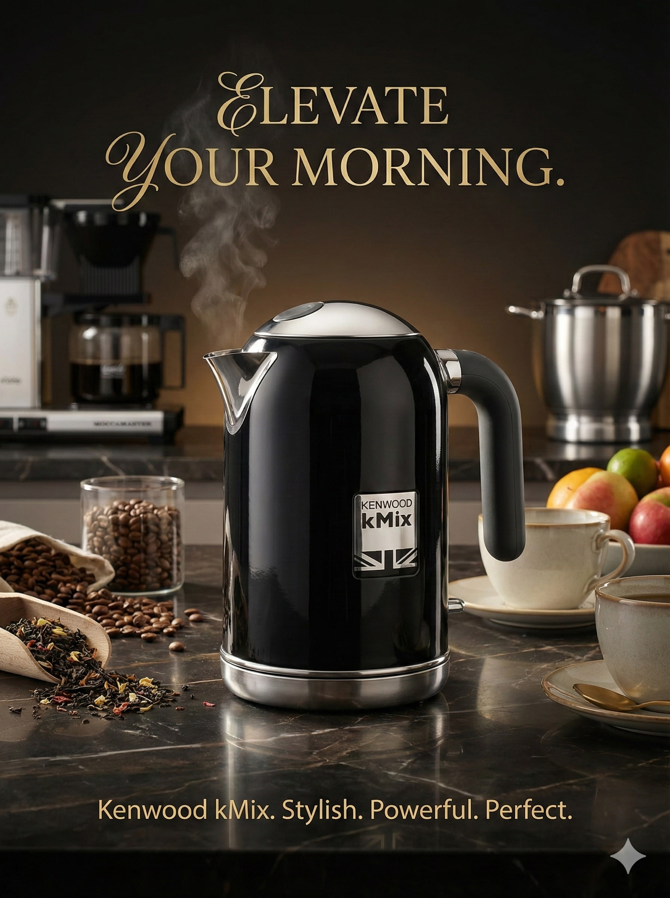

Architect / Engineer
Building the cognitive layer for enterprise systems. I specialize in designing autonomous ReAct agents, neuro-symbolic architectures, and offensive security AI frameworks.
PRODUCTION & RESEARCH MODULES
Cybersecurity / Automation
An enterprise-grade autonomous ReAct (Reason + Act) cybersecurity agent. Operates on a custom OODA-loop to autonomously audit local environments, perform active multi-threaded subnet sweeps, and query live NIST NVD CVE databases. Generates professional compliance reports using local 16GB VRAM frontier models without human intervention.
Voice Assistant / System Ctrl
A fully voice-activated AI assistant powered by a local Gemma 3 model. Features an Arc Reactor-inspired graphic interface, real-time WebSocket communication, and full operating system-level task automation with speech synthesis.
Data Privacy / Compliance
Enterprise-grade data sanitization framework. Automatically detects PII across 14+ data types (IBAN, SSN) and applies 8 distinct obfuscation strategies (Faker, Jitter, Hashing) to secure datasets before LLM training.
Autonomous system monitoring and anomaly detection engine using Gemini 1.5 Pro to parse complex server logs.
High-frequency financial data analysis using LSTM neural networks operating via live WebSocket streams.
Intelligent recruitment system using semantic search vectors. Parses resumes and matches candidates contextually.
Generative tool to dynamically architect and deploy personalized portfolio websites based on user prompt parameters.
Render Engine: Midjourney v6
